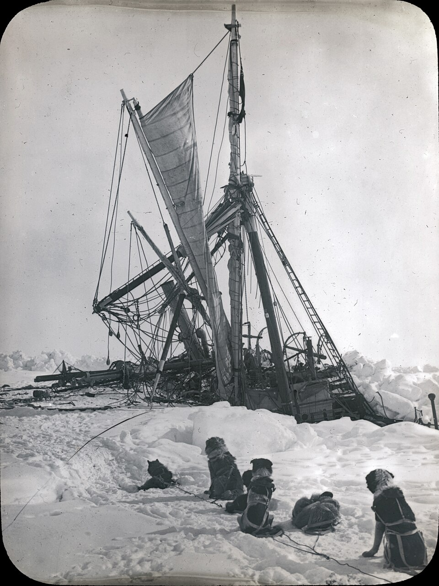

DOSSIER M22 // WEDDELL SEA // 1914–16
Endurance: Shackleton’s trapped ship and survival
[ MARITIME & GEOGRAPHIC MYSTERIES // POLAR ]


Event and chronology
Ernest Shackleton’s Endurance became trapped in Weddell Sea pack ice in January 1915. The crew abandoned the crushed ship in October, camped on the ice, then used lifeboats to reach Elephant Island and South Georgia. All 28 men survived after a series of rescue attempts.
What later accounts allege
Popular retellings sometimes cast the ship’s loss as an impossible disappearance or a hidden Antarctic anomaly, despite abundant first-hand records. Claims also misstate the rescue as immediate or suggest unexplained help.
Records, searches and conditions
Shackleton’s South, Frank Hurley’s photographs and crew diaries provide detailed chronology. The Endurance wreck was located in 2022 by the Endurance22 expedition, documenting the ship’s final resting place. These records are unusually rich but were written and curated by participants.
Independent and contrary evidence
The sinking and survival route are supported by multiple diaries, photographs, navigation accounts and a confirmed wreck. The pack ice and open-water crossings explain the ship’s loss and crew’s displacement; no evidence points to an anomalous region.
What remains unknown
Exact day-to-day drift and some personal decisions remain uncertain, and the narratives naturally emphasize the leader’s perspective. The successful rescue should not obscure the danger or the fact that survival depended on repeated failures and changing conditions.
Assessment
Endurance is not a mystery disappearance: its destruction and the crew’s survival are well documented. New expedition data or a detailed wreck survey could revise navigational particulars; extraordinary claims would need to explain, rather than ignore, this unusually complete record.
Sources and limits
- Scott Polar Research Institute — Shackleton Endurance diary, 1915Digitized firsthand diary records abandonment and sinking; it is a participant narrative rather than an independent position survey.
- Polar Record — “Why did Endurance sink?”Peer-reviewed paper evaluates diaries and wreck evidence; engineering interpretation is not eyewitness evidence.
- Endurance22 — wreck discovery and surveyCase-specific expedition documents 2022 wreck location and survey; imagery is not a complete forensic recovery.